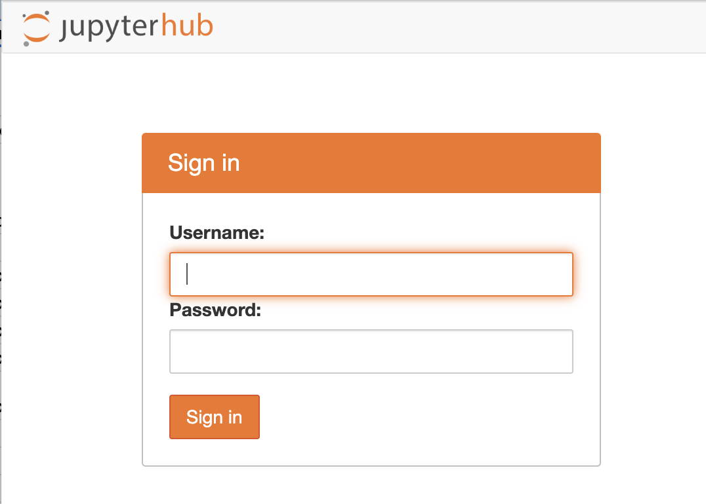

Lab 1: Getting Started
Welcome to SDS 271!
This introductory lab will serve as a refresher on the Python skills you learned in previous classes, as well as a chance to get to know the course structure and content.
You can download the .ipynb for this lab here, or you can find it in Moodle.
A note on the labs
For the first half of the semester, we will focus on skill building through in-class labs. You may or may not be able to complete the lab during class time, it is your responsibility to complete the lab and respond to the self-reflection poll (linked at the end of each lab). These will constitute your “weekly homework” and must be turned in by the due date (usually the Wednesday of the following week).
In these labs, you will see information and instructions given in a few ways.
Ordinary markdown: These traditional black-text-white-background sections are useful instructions, background, etc. You should read them to get context for what you will be doing.
These sections give you specific tips on how to do something that may be new or tricky.
Look here first if you are stuck!
These sections give you instructions for what you are supposed to do in order to complete the lab. Consider these the “problem statements” to which you are expected to produce a solution.
If at any point you are confused about what you are supposed to do, please ask!
Part one: JupyterHub
Get access to JupyterHub
If you’re reading this notebook in JupyterHub, then great! You’ve done it! If you’re reading this on the course website, then do the following:
In your browser, navigate to jupyterhub.smith.edu
You should see a page that looks like this:

Everyone who was already registered for the class or who sent Casey an email before yesterday at 5PM stating their intention to add the class have been added to the list of people who have access to this server. You should be able to log in using your Smith credentials.
username: your Smith email address, without the @smith.edu password: the password you use to access your Smith email
If you have not registered for the class or emailed Casey before yesterday at 5PM, then you are not on that list. Please speak to Casey and she will ask CATS add you, but it may take a day or two before you get access.
If you are struggling to connect, please speak to Casey or submit a bug report here
Once you are able to open the Lab 1 notebook (.ipynb extension) in JupyterHub, please check in on slido. You may proceed once you have done this.
Code and Markdown
Once you have access to JupyterHub, let’s get comfortable with using it. Similar to R Markdown (Quarto) that you used in SDS 100, JupyterHub allows you to write code in special code cells and annotate the code in markdown cells.
To create a new cell, press the “+” button in the menu along the top of the notebook.
Once you have a new cell, click on that cell to select it.
You can now choose “Code” or “Markdown” from the dropdown menu above.
To evaluate a code cell, use shift+enter.
Exercise 1:
- Perform a simple calculation with Python (it can be as easy as 1 + 1) in a cell.
- Leave a sentence or two in a markdown cell about what you did.
Then enjoy some wholesome support from Coach Lasso in the form of a gif.
Kernels, running, and interrupting
Sometimes, mistakes happen. Sometimes you write a while loop that has no termination condition and will run until the end of time if you let it. Sometimes you just realize after you ran a cell that you typed the wrong thing. Either way, you can always stop Jupyter in the middle of its processes.
In the menu at the top of the page, select Kernel > Interrupt to stop the Kernel.
Once you’re ready to run the code again, you can re-run.
You can also restart the whole kernel and run the notebook from the start (this is often a good first debugging method if you’re not sure why something isn’t working). Kernel > Restart Kernel and Run All Cells
Now, let’s try to see how this works. Here’s a line of code:
x = 0
while x < 10:
print("hello world!")Why do you expect this will be a problem if you try to run it? If you don’t know, talk to a neighbor.
Exercise 2:
Once you understand the problem, copy the code above into a new code cell and start running it.
When it loops forever, you’ll want to interrupt it using Kernel > Interrupt.
Then fix the code and rerun it so it only prints “hello world” 10 times.
Another useful tip: click on the tab on the far left of the browser that looks like a square inside of a circle. That tab will show you what tabs you have open and what kernels are running. It’s good practice to shut down any kernels you are not actively using. If you don’t do this, you will overload the server and have a hard time running your notebooks. Periodically check this tab and clean up your processes.
Part two: Python refresher and syllabus activity
One of the expectations of this class is that you have previous experience with Python. This is one of the reasons CSC 110 is a course prerequisite. It may have been a while since you’ve used Python, so let’s just refresh the skills you’ve already learned.
If you’re feeling particularly rusty, please use the second chapter of the course textbook to remind yourself of these basic Python operations.
Basic Data Types
Recall that in Python, we can create variables, which are placeholders to which we assign some value. That value does not have to be numerical – there are many kinds of data types we could use. Python will automatically assign a type to your data when you enter it, but it helps to be able to check that it’s what you expect.
Exercise 3:
Look through the first page of the syllabus and create variables to represent the following information. You may name the variables however you like, following Python’s naming conventions.
- Course number (not including the department prefix), integer
- Instructor first name, string
- Instructor email, string
- Length of the class, floating point number
- Days of the week we meet, list of strings
- Course prerequisites, list of strings
You can see how Python stores the variable type using the type() function. For example, if I define
x = 10and then use type(), I should see
type(x)
> intExercise 4:
Now use the Python type function to see how Python stored the variables you defined above. Do they match what you expect? If not, what do you need to change to make it right?
If you are only getting one output printed to the console, that’s because Jupyter only default prints the last operation you ask for. In order to force it to print everything, you need to wrap your instructions in the print() function.
Lists
Python can store collections of information in a number of ways. The simplest way is a list. To make a list in Python, you use square brackets to enclose the list and separate the entries with commas.
Python can make a list that contains multiple data types! This flexibility is useful but can be quite dangerous, especially when you try to automate things. Although we will be moving away from lists quickly, it’s important to know about this, and in general in this class, we will create “lists” that do not mix data types within one list or list-like object (more on that when we get to Pandas).
Exercise 5:
Turn to page two of the syllabus and make a list of the learning objectives you will have completed by the end of the course. You may copy from the syllabus or you may write them in your own words.
Dictionaries
Another way of organizing information in Python is to create a dictionary. Dictionaries store informaiton using keys and values – you can use the key to find the value you are looking for.
For example, if I wanted to make a dictionary for my family’s pets and who they belong to, I could do the following:
pets = {"Aspen": "Casey", "Sox":"Alannah", "Autumn": "Michael"}In this case, the pet names (Aspen, Sox, and Autumn) are the keys, and their person is the value. If I typed in
pets["Sox"]I would get the answer “Alannah”.
You can use any data type in here, and you can mix data types as well. There is a lot of flexiblity in creating dictionaries.
Exercise 6:
Look at page 3 of the syllabus and create a dictionary for the course compenents and their grading, where the key is the assignment name and the value is the percentage of the grade (express this as a decimal, where 1. = 100%).
You can also make a nested dictionary and add more information. Let’s do this with the pets example first. If I wanted to add more information, like what kind of animal each pet was and how old they are, I can do this by making a key for each pet and then a dictionary as the value. That inner dictionary could then be the information I desired.
For example
pets_detailed = {
"Aspen": {
"person": "Casey",
"age": 7,
"kind": "dog"
},
"Sox": {
"person":"Alannah",
"age": 9,
"kind": "cat"
},
"Autumn": {
"person":"Michael",
"age": 9,
"kind": "cat"
}
}In this case, the pet names are still the key, but if I choose that key, I get a whole dictionary. I can then select the keys from inside that dictionary. If I want to know whether Sox is a cat or a dog, I can do:
pets_detailed["Sox"]["kind"]I would get the answer “cat”.
If I want to know who is Aspen’s person, I would say:
pets_detailed["Aspen"]["person"]To find the keys of a dictionary, you just use the dictionary name and .keys():
pets_detailed.keys()returns
['Aspen', 'Sox', 'Autumn']and
pets_detailed["Aspen"].keys()returns
['person', 'age', 'kind']Exercise 7:
Make a new, nested dictionary, where the key is the assignment, and inside you have a dictionary that gives the due date, the percentage of the grade, and whether it’s graded S/U or on a numerical system. Note that you will need divide the final project into its components to do this.
Loops and functions
A central feature in programming is using the computer to do tedious and repetitive processes. We often do this by using loops – we will look at two kinds of loops in this lab: for loops and while loops.
For loops
For loops are given a set number of iterations up front. You can give the loop an existing list or array and ask it to loop over every element inside that list,
book_list["The Fifth Season", "A Wizard of Earthsea", "Jade City", "The Light Brigade"]
for book in book_list:
print(book)
> "The Fifth Season"
> "A Wizard of Earthsea"
> "Jade City"
> "The Light Brigade"You can do something similar with dictionaries:
for pet in pets_detailed:
print(pet+" is "+str(pets_detailed[pet]['age'])+" years old")
> Aspen is 7 years old
> Sox is 9 years old
> Autumn is 9 years oldor you can just give it a numerical range in a number of ways:
x_sum = 0
for x in range(0,10):
x_sum += x
x_sum
> 45or
x_sum = 0
for x in range(0,10,2):
x_sum += x
x_sum
> 20If you don’t understand what that last loop did, be sure to review your Python.
While loops
While loops don’t have a built in range, so you have to be careful how you write them. You have to construct an end condition and then make sure that condition is reached.
x_sum = 0
while x_sum > 0:
x_sum += 1This won’t even run because the condition (x > 0) immediately evaluates to false, and the loop only runs while that condition is true. However:
x_sum = 1
while x_sum > 0:
x_sum += 1This will run forever, because the condition will always be true.
x_sum = 0
while x_sum < 10:
x_sum += 1This will only run until x_sum reaches the value 10, and then it will stop.
Exercise 8:
Use the list you made earlier of the course objectives, and write a program that loops over that list and prints each learning objective to the screen. Write this program two ways:
- using a for loop
- using a while loop (hint: use the len() function to find out how many objectives there are
Functions
Functions put together a number of operations and wrap them up in a neat package (so to speak). We will use functions often in this class, because they make it very easy to write flexible code that can be applied to a variety of data sets.
If you don’t remember how to write a function, definitely review your Python. Remember that a function must have a specific format. In its simplest form, this looks like
def function_name([optional input parameters]):
[code to execute]
return [value/variable etc]The return statement is optional. Some functions just do things without returning any value. It’s up to you to decide what the best format is for a function you’re trying to write.
Exercise 9:
- write a function that takes as input a nested dictionary (like the one you created earlier for grades) prints the due date of that assignment
- write a function that takes as input a nested dictionary and one course component as a string and returns percent of the final grade that assignment is worth
Post-Lab: Production and Reflection
When you are done with this lab, make sure you save and export it as an HTML. This HTML file is what you will turn in through Moodle. In addition, don’t forget to fill out the post-lab reflection form. You must turn in both an HTML that demonstrates you have completed the lab and a self-reflection to get credit.